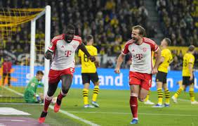

Welcome to Zorn FC
Home of Munich's Football Club
Home
Matches
Tickets
News
Contact Us
Products
News
April 5th 2024
ZornFC defeat Borussia Dortmund 2-1 away at Signal Iduna Park on their season opener!
